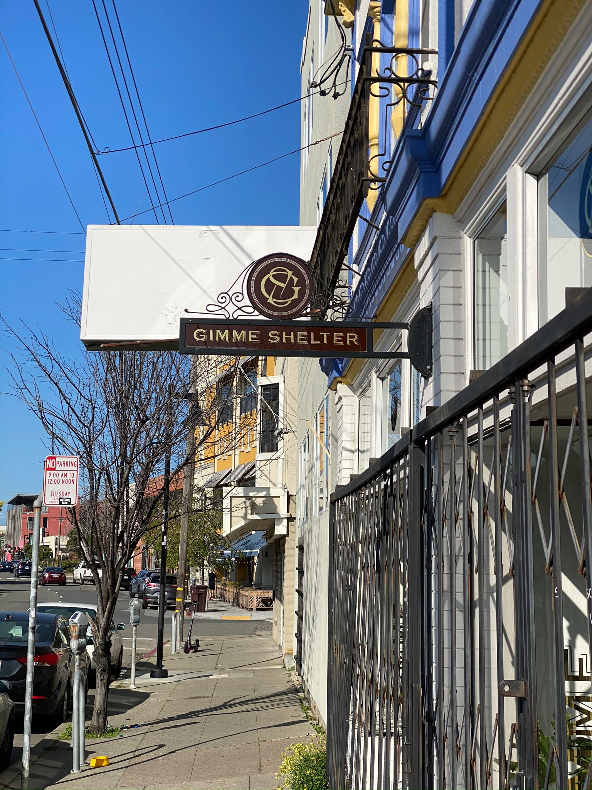

Data preparation
We collect, clean, and standardize eviction records for the courts, agencies, and legal organizations that hold them but do not have the staff or tools to prepare them for research.
About ERN
The Eviction Research Network is a research program led by Dr. Tim Thomas in UC Berkeley's Department of Sociology. We turn civil court records into open, comparable data on eviction and displacement, and we study how housing loss connects to health, contact with the criminal justice system, and climate risk.
Mission · Est 2018
A mother was served an eviction notice, settled out of court, and stayed in her home for two more years. The filing stayed on her record anyway, and was later used to deny her housing. With support from the American Civil Liberties Union, her case opened a larger question about racial and gender disparities in who faces eviction.
Research in King County, Washington found that Black households were four times more likely than White households to receive eviction notices, and that Black women were five times more likely than White men to have an eviction case filed against them.
Tim Thomas, ERN's founder, led that research and extended it across Washington State and other regions. The findings informed state and local policy, including Washington's extension of the eviction notice period from 3 to 14 days and Baltimore's Right to Counsel law, which guarantees tenants a lawyer in eviction cases. Both measures aim to reduce preventable evictions and give tenants a fairer process.
Eviction records exist, but they sit with individual courts in incompatible forms, sealed in one state, missing addresses in another, held as scanned images in a third. ERN fills that gap. We collect the records, clean and standardize them the same way everywhere, and publish our methods and code, so that a finding in Oregon can be compared directly with a finding in Maryland. Where a court system, a state, or another research group already publishes reliable eviction data, we work from it and cite it rather than duplicate it.
The disparities first documented in King County appear in state after state, and they fall along lines drawn by earlier housing policy, including redlining. Because a stable home shapes health, schooling, and employment, these patterns carry consequences well beyond the courtroom. ERN also estimates eviction and displacement risk at the neighborhood level, including in places where court data is sparse or unavailable, so that prevention can begin before a case is ever filed.
What we do
We collect, standardize, and analyze civil court records so that eviction can be measured the same way in every state, and so that disparities by race, gender, and neighborhood are documented rather than assumed.

We collect, clean, and standardize eviction records for the courts, agencies, and legal organizations that hold them but do not have the staff or tools to prepare them for research.
We estimate filing and judgment rates by neighborhood and by demographic group, using Bayesian inference, a statistical method that estimates a group's racial makeup from surnames and addresses. Race is estimated as a group rate, never assigned to an individual. The results are published as state profiles and interactive maps.
We work with courts, legal aid organizations, public agencies, and academic partners in each state we cover. Methods, code, and citations are published openly, so findings can be reproduced, contested, and extended by others.
We brief legislators, agencies, and courts on what the evidence supports, and evaluate which policies measurably reduce filings and displacement.
The team
Network
Practice network
Alumni
Graduate and undergraduate researchers who have contributed to ERN projects.
Academic home
The Eviction Research Network is a research program led by Dr. Tim Thomas, Assistant Researcher in the UC Berkeley Department of Sociology, which serves as its academic home. ERN is not a separate legal entity or a separate campus unit; its externally funded research is administered through the University.
Partners
Support
Partner with ERN
We collect and analyze court records, build data pipelines, train collaborators, and co-author research with courts, legal aid organizations, agencies, advocates, and universities. If you have records no one has analyzed, or need help with the ones you have, get in touch.